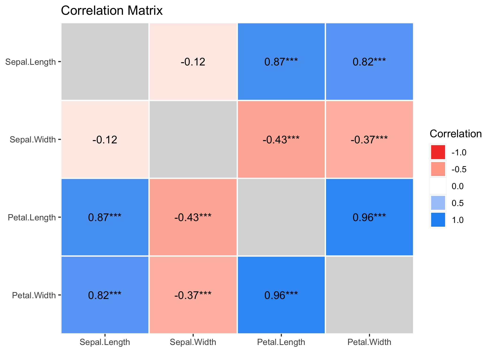
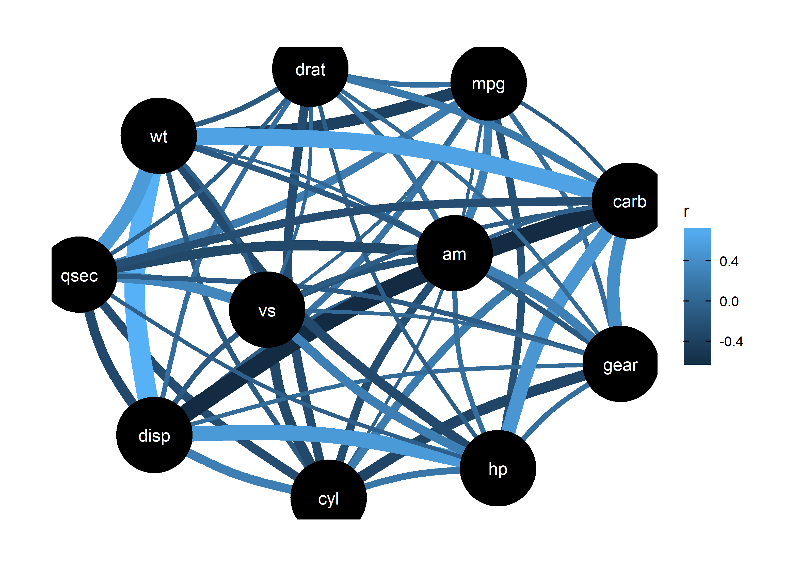

correlation is an easystats package focused on correlation analysis. It’s lightweight, easy to use, and allows for the computation of many different kinds of correlations, such as partial correlations, Bayesian correlations, multilevel correlations, polychoric correlations, biweight, percentage bend or Sheperd’s Pi correlations (types of robust correlation), distance correlation (a type of non-linear correlation) and more, also allowing for combinations between them (for instance, Bayesian partial multilevel correlation).
Citation
You can reference the package and its documentation as follows:
Makowski, D., Ben-Shachar, M. S., Patil, I., & Lüdecke, D. (2019). Methods and Algorithms for Correlation Analysis in R. Journal of Open Source Software, 5(51), 2306. 10.21105/joss.02306
Installation


Run the following to install the stable release of correlation from CRAN:
install.packages("correlation")Or this one to install the latest development version:
install.packages("remotes")
remotes::install_github("easystats/correlation")Documentation


Click on the buttons above to access the package documentation and the easystats blog, and check-out these vignettes:
Features
The correlation package can compute many different types of correlation, including:
- Pearson’s correlation
- Spearman’s rank correlation
- Kendall’s rank correlation
- Biweight midcorrelation
- Distance correlation
- Percentage bend correlation
- Shepherd’s Pi correlation
- Blomqvist’s coefficient
- Hoeffding’s D
- Gamma correlation
- Gaussian rank correlation
- Point-Biserial and biserial correlation
- Winsorized correlation
- Polychoric correlation
- Tetrachoric correlation
- Multilevel correlation
An overview and description of these correlations types is available here. Moreover, many of these correlation types are available as partial or within a Bayesian framework.
Examples
The main function is correlation(), which builds on top of cor_test() and comes with a number of possible options.
Correlation details and matrix
results <- correlation(iris)
results
## # Correlation Matrix (pearson-method)
##
## Parameter1 | Parameter2 | r | 95% CI | t(148) | p
## -------------------------------------------------------------------------
## Sepal.Length | Sepal.Width | -0.12 | [-0.27, 0.04] | -1.44 | 0.152
## Sepal.Length | Petal.Length | 0.87 | [ 0.83, 0.91] | 21.65 | < .001***
## Sepal.Length | Petal.Width | 0.82 | [ 0.76, 0.86] | 17.30 | < .001***
## Sepal.Width | Petal.Length | -0.43 | [-0.55, -0.29] | -5.77 | < .001***
## Sepal.Width | Petal.Width | -0.37 | [-0.50, -0.22] | -4.79 | < .001***
## Petal.Length | Petal.Width | 0.96 | [ 0.95, 0.97] | 43.39 | < .001***
##
## p-value adjustment method: Holm (1979)
## Observations: 150The output is not a square matrix, but a (tidy) dataframe with all correlations tests per row. One can also obtain a matrix using:
summary(results)
## # Correlation Matrix (pearson-method)
##
## Parameter | Petal.Width | Petal.Length | Sepal.Width
## -------------------------------------------------------
## Sepal.Length | 0.82*** | 0.87*** | -0.12
## Sepal.Width | -0.37*** | -0.43*** |
## Petal.Length | 0.96*** | |
##
## p-value adjustment method: Holm (1979)Note that one can also obtain the full, square and redundant matrix using:
summary(results, redundant=TRUE)
## # Correlation Matrix (pearson-method)
##
## Parameter | Sepal.Length | Sepal.Width | Petal.Length | Petal.Width
## ----------------------------------------------------------------------
## Sepal.Length | 1.00*** | -0.12 | 0.87*** | 0.82***
## Sepal.Width | -0.12 | 1.00*** | -0.43*** | -0.37***
## Petal.Length | 0.87*** | -0.43*** | 1.00*** | 0.96***
## Petal.Width | 0.82*** | -0.37*** | 0.96*** | 1.00***
##
## p-value adjustment method: Holm (1979)
Grouped dataframes
The function also supports stratified correlations, all within the tidyverse workflow!
iris %>%
select(Species, Sepal.Length, Sepal.Width, Petal.Width) %>%
group_by(Species) %>%
correlation()
## # Correlation Matrix (pearson-method)
##
## Group | Parameter1 | Parameter2 | r | 95% CI | t(48) | p
## ----------------------------------------------------------------------------------
## setosa | Sepal.Length | Sepal.Width | 0.74 | [ 0.59, 0.85] | 7.68 | < .001***
## setosa | Sepal.Length | Petal.Width | 0.28 | [ 0.00, 0.52] | 2.01 | 0.101
## setosa | Sepal.Width | Petal.Width | 0.23 | [-0.05, 0.48] | 1.66 | 0.104
## versicolor | Sepal.Length | Sepal.Width | 0.53 | [ 0.29, 0.70] | 4.28 | < .001***
## versicolor | Sepal.Length | Petal.Width | 0.55 | [ 0.32, 0.72] | 4.52 | < .001***
## versicolor | Sepal.Width | Petal.Width | 0.66 | [ 0.47, 0.80] | 6.15 | < .001***
## virginica | Sepal.Length | Sepal.Width | 0.46 | [ 0.20, 0.65] | 3.56 | < .01**
## virginica | Sepal.Length | Petal.Width | 0.28 | [ 0.00, 0.52] | 2.03 | < .05*
## virginica | Sepal.Width | Petal.Width | 0.54 | [ 0.31, 0.71] | 4.42 | < .001***
##
## p-value adjustment method: Holm (1979)
## Observations: 50Bayesian Correlations
It is very easy to switch to a Bayesian framework.
correlation(iris, bayesian = TRUE)
## # Correlation Matrix (pearson-method)
##
## Parameter1 | Parameter2 | rho | 95% CI | pd | % in ROPE | BF | Prior
## ------------------------------------------------------------------------------------------------------
## Sepal.Length | Sepal.Width | -0.11 | [-0.24, 0.01] | 91.70% | 43.38% | 0.509 | Beta (3 +- 3)
## Sepal.Length | Petal.Length | 0.86 | [ 0.83, 0.90] | 100%*** | 0% | > 1000*** | Beta (3 +- 3)
## Sepal.Length | Petal.Width | 0.81 | [ 0.75, 0.84] | 100%*** | 0% | > 1000*** | Beta (3 +- 3)
## Sepal.Width | Petal.Length | -0.41 | [-0.53, -0.31] | 100%*** | 0.03% | > 1000*** | Beta (3 +- 3)
## Sepal.Width | Petal.Width | -0.35 | [-0.48, -0.25] | 100%*** | 0.15% | > 1000*** | Beta (3 +- 3)
## Petal.Length | Petal.Width | 0.96 | [ 0.95, 0.97] | 100%*** | 0% | > 1000*** | Beta (3 +- 3)
##
## Observations: 150Tetrachoric, Polychoric, Biserial, Biweight…
The correlation package also supports different types of methods, which can deal with correlations between factors!
correlation(iris, include_factors = TRUE, method = "auto")
## # Correlation Matrix (auto-method)
##
## Parameter1 | Parameter2 | r | 95% CI | t(148) | p
## -------------------------------------------------------------------------------------
## Sepal.Length | Sepal.Width | -0.12 | [-0.27, 0.04] | -1.44 | 0.452
## Sepal.Length | Petal.Length | 0.87 | [ 0.83, 0.91] | 21.65 | < .001***
## Sepal.Length | Petal.Width | 0.82 | [ 0.76, 0.86] | 17.30 | < .001***
## Sepal.Length | Species.setosa | -0.72 | [-0.79, -0.63] | -12.53 | < .001***
## Sepal.Length | Species.versicolor | 0.08 | [-0.08, 0.24] | 0.97 | 0.452
## Sepal.Length | Species.virginica | 0.64 | [ 0.53, 0.72] | 10.08 | < .001***
## Sepal.Width | Petal.Length | -0.43 | [-0.55, -0.29] | -5.77 | < .001***
## Sepal.Width | Petal.Width | -0.37 | [-0.50, -0.22] | -4.79 | < .001***
## Sepal.Width | Species.setosa | 0.60 | [ 0.49, 0.70] | 9.20 | < .001***
## Sepal.Width | Species.versicolor | -0.47 | [-0.58, -0.33] | -6.44 | < .001***
## Sepal.Width | Species.virginica | -0.14 | [-0.29, 0.03] | -1.67 | 0.392
## Petal.Length | Petal.Width | 0.96 | [ 0.95, 0.97] | 43.39 | < .001***
## Petal.Length | Species.setosa | -0.92 | [-0.94, -0.89] | -29.13 | < .001***
## Petal.Length | Species.versicolor | 0.20 | [ 0.04, 0.35] | 2.51 | 0.066
## Petal.Length | Species.virginica | 0.72 | [ 0.63, 0.79] | 12.66 | < .001***
## Petal.Width | Species.setosa | -0.89 | [-0.92, -0.85] | -23.41 | < .001***
## Petal.Width | Species.versicolor | 0.12 | [-0.04, 0.27] | 1.44 | 0.452
## Petal.Width | Species.virginica | 0.77 | [ 0.69, 0.83] | 14.66 | < .001***
## Species.setosa | Species.versicolor | -0.88 | [-0.91, -0.84] | -22.43 | < .001***
## Species.setosa | Species.virginica | -0.88 | [-0.91, -0.84] | -22.43 | < .001***
## Species.versicolor | Species.virginica | -0.88 | [-0.91, -0.84] | -22.43 | < .001***
##
## p-value adjustment method: Holm (1979)
## Observations: 150Partial Correlations
It also supports partial correlations (as well as Bayesian partial correlations).
iris %>%
correlation(partial = TRUE) %>%
summary()
## # Correlation Matrix (pearson-method)
##
## Parameter | Petal.Width | Petal.Length | Sepal.Width
## -------------------------------------------------------
## Sepal.Length | -0.34*** | 0.72*** | 0.63***
## Sepal.Width | 0.35*** | -0.62*** |
## Petal.Length | 0.87*** | |
##
## p-value adjustment method: Holm (1979)Gaussian Graphical Models (GGMs)
Such partial correlations can also be represented as Gaussian Graphical Models (GGM), an increasingly popular tool in psychology. A GGM traditionally include a set of variables depicted as circles (“nodes”), and a set of lines that visualize relationships between them, which thickness represents the strength of association (see Bhushan et al., 2019).
library(see) # for plotting
library(ggraph) # needs to be loaded
mtcars %>%
correlation(partial = TRUE) %>%
plot()
Multilevel Correlations
It also provide some cutting-edge methods, such as Multilevel (partial) correlations. These are are partial correlations based on linear mixed models that include the factors as random effects. They can be see as correlations adjusted for some group (hierarchical) variability.
iris %>%
correlation(partial = TRUE, multilevel = TRUE) %>%
summary()
## # Correlation Matrix (pearson-method)
##
## Parameter | Petal.Width | Petal.Length | Sepal.Width
## -------------------------------------------------------
## Sepal.Length | -0.17* | 0.71*** | 0.43***
## Sepal.Width | 0.39*** | -0.18* |
## Petal.Length | 0.38*** | |
##
## p-value adjustment method: Holm (1979)However, if the partial argument is set to FALSE, it will try to convert the partial coefficient into regular ones.These can be converted back to full correlations:
iris %>%
correlation(partial = FALSE, multilevel = TRUE) %>%
summary()
## Parameter | Petal.Width | Petal.Length | Sepal.Width
## -------------------------------------------------------
## Sepal.Length | 0.36*** | 0.76*** | 0.53***
## Sepal.Width | 0.47*** | 0.38*** |
## Petal.Length | 0.48*** | |